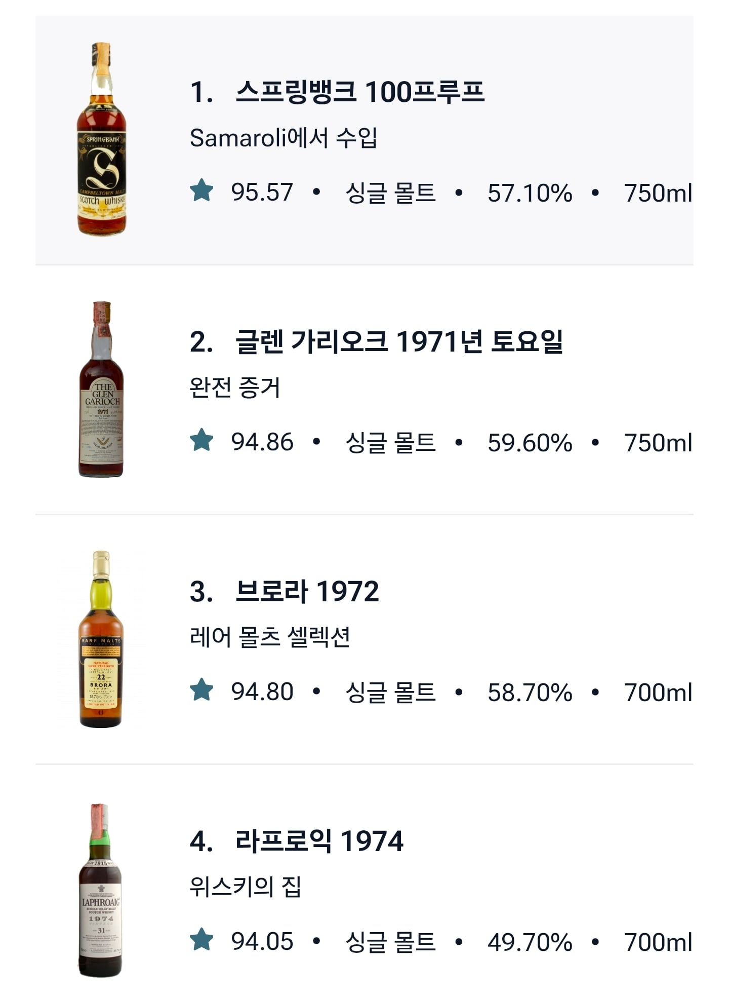
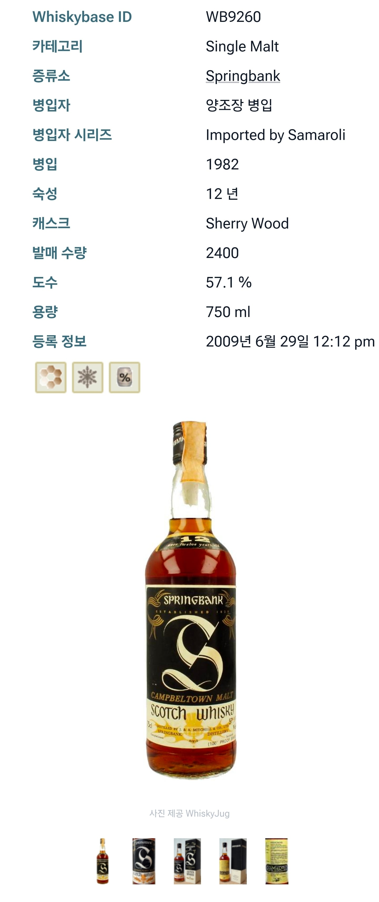
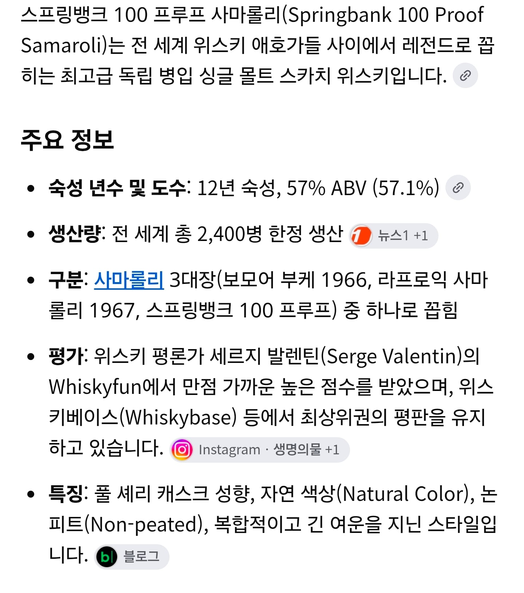

참고로 위스키 평가사이트 위스키베이스 순위 보자면

스프링뱅크 100프루프 12년 사마롤린 이 1위 이다


대신 독립병입자 바틀이라 한정생산 제품
현 시세 2500만원~5000만원 선에서 거래됨
숙성년수가 높을수록 꼭 맛있거나 좋은건 아니란 거다
참고로 위스키 평가사이트 위스키베이스 순위 보자면

스프링뱅크 100프루프 12년 사마롤린 이 1위 이다


대신 독립병입자 바틀이라 한정생산 제품
현 시세 2500만원~5000만원 선에서 거래됨
숙성년수가 높을수록 꼭 맛있거나 좋은건 아니란 거다
그건 아냐 병신아 만화만 보고 판단하는 멍청아.. 뭘 판단하려면 최소한은 경험하고 해
? ㅋㅋㅋ 또 쪼랩 ㅅㄲ 좋게 좋게 말해줬더니 지 아는거 나왔다고 다짜고자 욕질이야 병신 새끼야~ 너 뭐 되냐? 내가 그래서 그런거 아닌가? 하고 의문문으로 댓글 달았는데 뭐가 불만이야 좆병신 새꺄~ 니 인생경험 뭐 얼마나 된다고 태클이야 좆마나~
ㅋㅋㅋ
돈값을 못할 수는 있지만 대체로 좋고 맛있긴 하지
18년까지만 마셔봤는데 일단 내가 마셔본 수직시음경험에서는 대부분 18년이 제일 낫고 가끔 12,15년은 12년이 더 나은게 있더라.
저기 예시로 나온 술들을 생산했던 시기는 양조용 보리 발아 작업이나 및 숙성용 오크통 재료나 사용 방식 등이 지금 시대 생산방식과 환경이 많이 다르고 그만큼 맛 기준도 다름..
그리고 저 술들은 그렇게 생산된 술들 중 고르고 골라 선별한 제품으로 유통된 것들이고, 그것들 중 평론가나 대중들이 맛있다고 평가한 술들임..
위스키 타이틀 달 수 있는 최소 숙성 년수가 3년인데, 그 당시 12년은 고숙성 제품인거임 ㅎㅎ
그런 왕중왕 술들하고 요즘 출시되는 대중적 고숙성 위스키랑 비교하는 건 무리임..
정 비교를 하려면 고숙성 위스키 중 평가 아주 좋은 술들이랑 비교해야지 ㅋㅋ
내가 하고싶은 말은 고숙성 일수록 맛의 척도가 아니라는 말 하고싶었음
그 부분은 나도 동의~ 주위에 위스키 즐기는 지인들이나 나도 고비용에 접근성 어려운 고숙성 위스키 보다
맛나고 부담없는 가성비 엔트리 위스키를 좋아함.. 다만 요즘은 12년에서 점점 15~18년으로 옯겨가면서 마시는 양이 조금씩 줄어들고 있음 ^^;
딱 그 바키 만화에 나오는 와인병 터트린 아저씨가 말한 거랑 비슷한거 아닌가, 분명 오래 숙성할 수록 미약하게나마 더 맛있어지거나 뭔가 장점이 있긴 하겠지. 주류회사나 양조장은 아무튼 그 술을 보관하느라 보관비는 더 들었을 거고, 신선식품은 아니니까 뭐 악성재고가 되진 않겠지만 오래 둘 수록 지금까지 들인 돈을 회수하기 위한 어떤 장치인거 같긴한데, 결국 소비하는 사람이 명품 걸치냐 동대문, 동묘에서 구제 옷 사냐 어떻게 보자면 큰 차이 없어 보이는데 가격은 ㅈㄹ 차이나는 건 그걸 원하는 사람들이 있어서 인거고